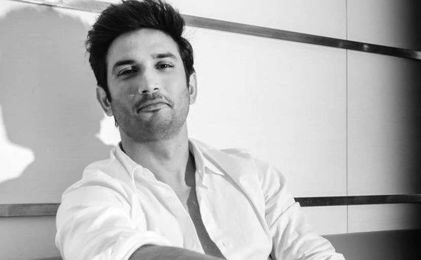

Sushant Singh Rajput
"I am not lost. I am very much alive."

Here's a time line of Sushant Singh Rajput's life :
- 1986: He was born in Patna in the state of Bihar .
- 2002: His family moved to Delhi following his mother's death where Sushant Singh Rajput completed his schooling for intermediate studies in Kulachi Hansraj Model School .
- 2006: He dropped out of his engineering course during his fourth year to begin a career in arts and performance.
- 2008: Sushant Singh Rajput was subsequently called for an audition and cast as a second lead in the television series Kis Desh Mein Hai Meraa Dil.
- 2010: His first award for best actor in the Indian Television Academy Awards .
- 2010: He also won three major television awards in the categories of best male actor and most popular actor.
- 2011: Sushant Singh Rajput continued to act in Pavitra Rishta from its first airing in 2009 till his exit in 2011.
- 2011: Sushant Singh Rajput was spotted by Mukesh Chhabra , the casting director of Kai Po Che! , who invited him for an audition.
- 2013: Kai Po Che! was released and became a commercial and critical success
- 2014: Sushant Singh Rajput made a later reappearance in the final episode of Pavitra Rishta after gaining critical acclaim in Bollywood .
- 2014: His film PK was released and became the highest grossing Indian film.
- 2014: On 25 September 2014, Sushant Singh Rajput was announced as the actor who would play the role of Dhoni in the biopic which was titled M.S. Dhoni: The Untold Story and directed by Neeraj Pandey.
- 2015: His film Detective Byomkesh Bakshy! was released on 3 April 2015 and failed to perform well in the box office but still received a positive critical reception.
- 2016: M.S. Dhoni: The Untold Story film was produced by Arun Pandey with Fox Star Studios and released on 2 October 2016.
- 2017: He was featured for first time in the Forbes India's Top 100 Celebrity list.
- 2017: His film Raabta was released on 9 June 2017.
- 2018: He also made a cameo appearance in the comedy film Welcome to New York , which was released on 23 February 2018.
- 2019: His romantic comedy film Chhichhore produced by Fox Star Studios and Nadiadwala Grandson Entertainment released on 6 September 2019.
- 2020: His film named Dil Bechara
- 2020: He found dead, hanging from the ceiling fan in his home in Bandra, Mumbai. ""No matter what you achieve, what you want to aspire to be, or how famous and powerful you become, the most important thing is whether you are excited about each and every moment of your life because of your work and people around you.""
--Sushant Singh Rajput